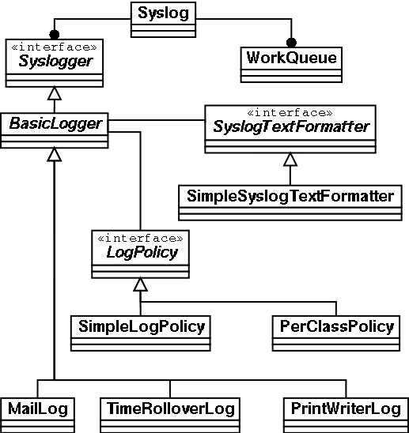

|
Syslog was developed to fill the need for a simple and robust logging system that is not tied to any specific application server or to the concept of an application server in general. Since then, it has grown considerably and encompases many features that are not particularly simple. However, it is still very simple to use and can be used in various stages of complication.
Syslog provides the following features:
The general idea is that Syslog lets the programmer log messages easily through a clean API and then not worry about what happens to those messages. During development and testing, the messages may be simply sent to the console where the application is running or to a single log file. When the system is moved into production, log messages can be split up by severity (very severe messages may result in someone being paged, for instance) and log files may be rotated every night and archived. These kinds of configuration changes don't require changes to the code and can even be made while the system is running.
Syslog is licensed under the Protomatter Software License, version 1.0 and is free for commercial and non-commercial use.
Anytime a programmer wants to issue a message to Syslog, they simply call a static method on the com.protomatter.syslog.Syslog class. There's no need to carry around a reference to an instance of Syslog to make calls. This simplifies usage greatly -- there's no need for setup in a class that wants to use Syslog: you can just start calling log methods and that's it.
There are forty-eight methods on the Syslog class that can be used for issuing messages to the logging system. Having said that, it's unlikely in the extreme that you will use all of them. All those methods are pass-throughs to one method which takes six arguments, so the other forty-seven methods are all convenience methods for issuing messages. Don't get freaked out by how many methods you have to choose from: Syslog is a bit like a Swiss Army knife in that respect -- it probably has more blades than you'll ever need, but they're there just in case.
The simplest way programmers usually mark up their code with messages is to pepper the code with calls to "System.out.println()" -- and then invariably they have to go back and comment them out before the system goes to production. Some calls are missed and then operations people will start to ask why the application prints "I'm in here" continuously while it's running.
One way to start getting accustomed to using Syslog is to replace code like this:
System.out.println("I'm in here");
|
With code like this:
Syslog.debug(this, "I'm in here"); |
It's not much more complicated than calling "System.out.println()" and the output is a whole lot nicer. Instead of getting output like this:
I'm in here |
You should see something like this:
11/02/2001 10:52:53 [DBUG] Test I'm in here |
And if you have Syslog set to log the thread name and channel for each message, you'll get something like this:
11/01/2001 10:56:44 [DBUG] [DEFAULT_CHANNEL] [T:main ] Test I'm in here |
Pretty fancy, eh? Later, when the system goes into production, messages at the "debug" severity can just be sent off into space and nobody will wonder why the system is printing "I'm in here" constantly.
There are log shortcuts for handling exceptions, too. If you call "Syslog.log(this, x)" where x is an java.lang.Throwable, then you'll see output like this in the log:
11/01/2001 10:40:32 [EROR] Test java.lang.Exception: Crap!
java.lang.Exception: Crap!
at Test.blah(Test.java:37)
at Test.foo(Test.java:28)
at Test.main(Test.java:12)
|
The output of the getMessage() method is printed as the short description, and a stack trace is printed as the detail of the message, and the whole thing is logged at the ERROR level. This is much better than spreading calls to x.printStackTrace() all over your code. As you'll see later, you can choose to route these kinds of messages to a separate log or do any number of other things with them.
Syslog messages each have an associated "severity level" to show roughly how important each message is. The levels are:
It's really important to actually use the different severity levels where they are appropriate. If every message in the system is logged at the "debug" level, the operations team can't tune things out without tuning everything out.
Before we go much further, let's look at the logging methods that are available on the Syslog class. The fall into three categories:
log(Object logger, Throwable t) log(Object logger, Throwable t, int level) log(Object logger, Object msg, Object detail, int level) log(Object logger, Object chan, Object msg, Object detail, int level) log(InetAddress host, Object logger, Throwable t) log(InetAddress host, Object logger, Throwable t, int level) log(InetAddress host, Object logger, Object msg, Object detail, int level) log(InetAddress host, Object logger, Object chan, Object msg, Object detail, int level)
xxx(Object logger, Object msg) xxx(Object logger, Object msg, Object detail) xxx(InetAddress host, Object logger, Object msg) xxx(InetAddress host, Object logger, Object msg, Object detail)
xxxToChannel(Object logger, Object chan, Object msg) xxxToChannel(Object logger, Object chan, Object msg, Object detail) xxxToChannel(InetAddress host, Object logger, Object chan, Object msg) xxxToChannel(InetAddress host, Object logger, Object chan, Object msg, Object detail)
It's fairly safe to assume that you'll never use any of the methods that include the InetAddress argument. These are used internally by Syslog, and an generally of no concern to the programmer. The rest of the arguments to the methods are:
Note: Exact formatting of the arguments above is actually dependent on what log formatting module is used by the logger handling the request. The above explanations of formatting assume that you are using the default log formatting module and not one of your own design.
Don't Freak Out: Yes, there's a bunch of methods there. You'll probably never, ever use all of them. If you really must have a smaller API, take a look at the Channel object. It provides a simplified logging API.
A more advanced feature of Syslog is it's support for multiple log channels, defined on-the-fly. The basic idea is that one instance of an application server (such as BEA WebLogic Server) may host multiple projects who each want to have their logs dealt with separately. From the programmer's perspective, message are just sent into channels and someone else deals with them. What happens to these messages (what files they end up in, etc) is something that can be configured at runtime. There is a default channel (whose name is the constant Syslog.DEFAULT_CHANNEL on the Syslog class) that messages go to by default, and there is also a channel named Syslog.ALL_CHANNEL that can be used to broadcast messages to every channel.
Let's say that you're running two projects ("BigBank" and "SomeOtherBigBank") on the same instance of WebLogic Server. You might want all log messages from the BigBank project to go to the "BigBankChannel" channel, and all log messages from the SomeOtherBigBank project to go to the "SomeOtherBigBankChannel" channel. There are two ways to accomplish this:
The first way is to call versions of the log(...) methods above that take a channel argument and specify the channel everywhere. This will quickly become very annoying and you'll end up either misspelling the channel name somewhere. One way to mitigate this is to have some interface in your project that defines a public static constant like this:
public interface BigBank
{
public static Object SyslogChannel = "BigBankChannel";
}
|
Then have every class specific to the BigBank project implement that interface or use it when calling log(...) methods, like this:
// if the current class implements the "BigBank" interface Syslog.debugToChannel(this, SyslogChannel, "Hello there"); ... // if the current class doesn't implement the "BigBank" interface Syslog.debugToChannel(this, BigBank.SyslogChannel, "Hello there"); |
Programmers will quickly tire of this, though, and invariably there will be messages leaking out going to other channels, etc.
Because the above method of sending message to channels is annoying, the SyslogChannelAware interface was written. It looks like this:
public interface SyslogChannelAware
{
public Object getSyslogChannel();
}
|
Not too complicated. The idea is that any object passed in as the logger argument to one of the log(...) methods (usually "this") that implements this interface is asked what channels it wants the message to go to. If the call to Syslog included a channel (i.e. was one of the "xxxToChannel(...)" methods, etc.) then the class is not asked what channels it wants the message to go to.
Why is this good? Most of the classes in modern classes are built on top of more generic classes -- baseclasses from frameworks, etc. If each of the baseclasses used in your system implements this interface, the programmers writing subclasses never have to bother with channel names, etc. The baseclass can read a list of channels to use out of a configuration file or from some other source. This works particularly well in the case of EJBs since you could specify channels to use in the deployment descriptor for the bean. This kind of flexibility means that when a system is moved into production, different subsystems can be configured to write messages to different log channels without needing to change any code. Programmers just keep making calls to "Syslog.debug(...)" and other methods, and the messages are magically routed to the correct channel dynamically.
The Channel class provides a greatly-simplified API for making log calls. Use it like this:
// some short messages
Channel default = Channel.getDefaultChannel();
default.debug(this, "Hello there... this is a debug message");
default.error(this, "Hello there... this is an error message");
// some long messages (messages with detail)
Channel systemChannel = Channel.getChannel("system");
systemChannel.info(this, "Hello there...", someLongString);
systemChannel.error(this, "Hello there...", someLongString);
|
One criticism of Syslog over other logging APIs, particularly Log4J, is that Log4J includes its named logger API. This channel API for Syslog is analogous to this feature in Log4J. It's not the same, but it's similar. I find this new channel API very easy to use (compared with the "regular" Syslog API). It's small and clean.
Here's a simple example of how to write messages at different severities:
// some short messages -- to the default channel
Syslog.debug(this, "Hello there... this is a debug message");
Syslog.info(this, "Hello there... this is an info message");
Syslog.warning(this, "Hello there... this is a warning message");
Syslog.error(this, "Hello there... this is an error message");
Syslog.fatal(this, "Hello there... this is a fatal message");
// some long messages (messages with detail) -- to the default channel
Syslog.debug(this, "Hello there...", someLongString);
Syslog.info(this, "Hello there...", someLongString);
Syslog.warning(this, "Hello there...", someLongString);
Syslog.error(this, "Hello there...", someLongString);
Syslog.fatal(this, "Hello there...", someLongString);
// misc log messages to some named channels
Channel system = Channel.getChannel("system");
system.info(this, "This is an info message to the system channel");
system.debug(this, "This is a debug message");
Channel security = Channel.getChannel("security");
security.warning(this, "Failed login attempt");
|
Here's an example of how to handle exceptions. This code will produce a stack trace in the log if a SQLException is encountered.
try
{
// do some stuff with a database here
}
catch (SQLException x)
{
Syslog.log(this, x);
// or
someChannel.log(this, x);
throw new MyCustomException("Could not do some stuff!");
}
|
These examples should be good enough to get you through 95% of what you'll need to do with Syslog. If you're curious, play around with all the other methods that can be used to write log messages.
Standard Is Better Than Good. Like it or not, a standard logging API is available as part of the JDK, starting with JDK 1.4. This new package, java.util.logging provides a common logging API.
Syslog is fully compatible with this new logging API. With a very simple properties file and a couple of command-line arguments to the JVM, you can transparently route all JDK-based logging calls straight into Syslog where they will be handled appropriately.
Given the following file (call it "logging.properties" for this example):
.level = ALL handlers = com.protomatter.syslog.SyslogHandler |
That file will instruct the JDK's logging framework to route all messages to the Syslog handler (an adapter from the JDK 1.4 logging framework to Syslog).
Next, run your program, including a couple of special options:
java \
...
-Djava.util.logging.config.file=/path/to/logging.properties \
-DSyslogHandler.xml=/path/to/syslog.xml \
...
java-main-class
|
These extra options tell the JDK 1.4 logging framework where to read the config file from, and it also tells the Syslog adapter where a config file is. If you're using multiple configuration files, or doing something fancy, you can omit the SyslogHandler.xml option and configure Syslog yourself (JDK logging calls will still be routed to Syslog).
Given code like the following (note that there are no Syslog calls, and no references to Syslog):
import java.util.logging.Logger
...
// Make a new logger
Logger myLogger = Logger.getLogger("foo.bar");
// Write some log messages
myLogger.info("Info message to my logger");
myLogger.warning("Warning message to my logger");
myLogger.severe("Severe message to my logger");
|
You should see the following output:
11/01/2001 20:09:16 [INFO] [foo.bar ] Test.main():23 Info message to my logger 11/01/2001 20:09:16 [WARN] [foo.bar ] Test.main():25 Warning message to my logger 11/01/2001 20:09:16 [EROR] [foo.bar ] Test.main():27 Severe message to my logger |
Note the method name and line numbers in the output. Through a new API in JDK 1.4, Syslog is able to determine the class name, method name and source file line number where the original call to either the JDK 1.4 logging API or a Syslog API. See the next section for more details.
Also see the com.protomatter.syslog.util.logging package documentation for migration tools for JDK 1.2.x and 1.3.x.
Syslog can be configured to compute the correct caller class name, method name and line number at runtime. Under JDK 1.2 and 1.3, this is done by parsing a stack trace, and in JDK 1.4 is it accomplished by using new API calls on exceptions. See com.protomatter.util.StackTraceUtil for more information.
Syslog has two settings that govern if and when this infomation is computed. This feature is extremely useful for debugging, but can also degrade performance.
The Syslog.setComputeCaller() method tells Syslog if it should compute the caller information before calling the log() method on a logger. If this is set to true, then the logger will have access to the correct caller information, but the log policy won't have the method or line number available. The default value for this setting is false.
The Syslog.setAlwaysComputeCaller() method tells Syslog if it should compute the caller information for every log method call. If this is set to true, then both the logger and the policy will have access to the correct caller information, but the log policy won't have the method or line number available. The default value for this setting is false. The reason for this is that unless the log policy is selecting based on method name or caller class name, it is expensive to compute the caller for every log call (since many calls do not pass the policy test).
The Apache Jakarta Commons Logging API is a super-thin logging API with pluggable backends including Log4J and other APIs. The com.protomatter.syslog.commons package includes adapter classes for that API.
Given a simple configuration file, this API allows you to write code like this:
import org.apache.commons.logging.Log;
import org.apache.commons.logging.LogFactory;
...
Log log = LogFactory.getLog("foo.bar");
log.info("This is an info message");
log.error("This is an error message");
log.error("This is an error message", new Exception("Blah!"));
|
The logging calls will be routed to Syslog and handled accordingly.
The Debug class provides a useful tool for keeping very expensive operations out of production systems without the need to recompile to make the change. It provides a hierarchical naming scheme and allows wildcards to turn things on and off.
You can use the Debug.addTraceName(), Debug.addDebugName() and Debug.addInfoName() methods to add name patterns and/or explicit names to the list of things to match against.
For instance, if you add the following patterns:
Then the following names would "match" the patterns:
And the following names would not "match" the patterns:
This class is useful in a debugging aid, like this:
import com.protomatter.util.Debug;
import com.protomatter.util.StackTraceUtil;
import com.protomatter.syslog.Channel;
...
protected static Debug debug = Debug.forPackage(ThisClass.class);
protected static Channel channel = Channel.forPackage(ThisClass.class);
...
// three levels: trace, debug and info
if (debug.trace())
channel.debug(this, "Very detailed tracing information");
// debugging messages
if (debug.debug())
channel.debug(this, "I'm over here -> " + StackTraceUtil.whereAmI());
// infomration messages
if (debug.info())
channel.info(this, "Non-programmer kinds of messages");
|
This can prevent expensive operations involved in debugging to be quickly bypassed in production environments by changing a configuration file instead of re-compiling.
You can configure a pattern/name list using the XML configuration file for Syslog. See the JavaDoc for SyslogXML.configure() for more information.
The Syslog class itself is a singleton -- that is, there is only one instance of it per VM (or at least per classloader if you want to get picky). It contains all configuration information related to where messages are routed, who is listening for those messages, etc.
|  |
| Abbreviated Syslog Architecture Diagram |
Syslog maintains a list of loggers -- objects that want to listen to log messages being submitted. These loggers implement the Syslogger interface -- mainly the log(SyslogMessage message) method which is called every time a message is sent to Syslog.
Once the log() method is called on the Syslogger it should (very quickly) decide if the message being logged is one that it cares about. If the message is relevant, then the logger writes the message to a file or does whatever it wants with it.
The default implementation of the Syslogger interface is the BasicLogger abstract class. This is the baseclass for all the loggers that are included with Syslog.
The BasicLogger delegates the decision about paying attention to a given message to an implementation of the LogPolicy interface. The default implementation of the LogPolicy interface is the SimpleLogPolicy class. This policy knows about log message severity levels and about log channels -- it can be configured to only pay attention to messages at a certain level (or set of levels) and to only pay attention to messages arriving on a certain channel (or set of channels). This policy could easily be extended to take into account any other inputs desired (you could, for instance, have a policy that only paid attention to messages coming from objects of a certain class, etc).
The BasicLogger also delegates it's message formatting duties to an implementation of the SyslogTextFormatter interface. The default implementation of this interface is the SimpleSyslogTextFormatter class which can be configured to format log messages in a number of ways.
During initialization (in the configure(...) method) the BasicLogger passes it's initialization properties along to the configure(...) method on the log policy module and text formatting module that have been specified. Because of this, any policy or formatter module can be configured easily (this becomes particularly important when working inside an application server such as BEA WebLogic Server).
If, for some reason, you want to plug in your own LogPolicy implementation or your own SyslogTextFormatter implementation it's very simple to do with any logger that extends from BasicLogger.
There are several loggers included with the Syslog distribution that cover most of the bases as far as log functionality is concerned. They are:
Each of the above loggers extends BasicLogger and so supports pluggable log policies. All of them except for the DatabaseLog support pluggable text formatting modules.
A startup class for BEA WebLogic Server is provided with the Syslog distribution. It allows Syslog to be initialized when WebLogic boots.
To configure weblogic to initialize Syslog when it starts, add the following line to your weblogic.properties file:
weblogic.system.startupClass.Syslog=com.protomatter.syslog.SyslogT3Startup java.system.property.Syslog.config.xml=ConfigFilePath |
You can either set the "Syslog.config.xml" system property by specifying it in the weblogic.properties file (as shown above), or by adding "-DSyslog.config.xml=ConfigFilePath" as a command-line argument to the Java VM in the startup script for WebLogic.
The SyslogT3Startup class implements the weblogic.common.T3StartupDef interface required for startup classes in WebLogic Server. That class also implements the weblogic.common.T3ShutdownDef interface, and will wait for all loggers to finish writing log entries and gracefully close all logs when WebLogic shuts down. To configure this behavior, add the following line to your weblogic.properties file:
weblogic.system.shutdownClass.Syslog=com.protomatter.syslog.SyslogT3Startup |
If, for some reason, you have a startup class of your own that needs to ensure that Syslog has been configured before it starts, you can include the following code in the startup(...) method of your T3StartupDef implementation:
SyslogT3Startup syslogStartup = new SyslogT3Startup(); syslogStartup.startup(services); |
In addition to this method of configuration, you can also use the less server-specific Servlet- and J2EE-related configuration options discussed below.
Using the classes in the jmx package, you can configure JBoss to load and configure Syslog when it boots.
Simply add the following lines to your jboss.mlet file:
<mbean code="com.protomatter.syslog.jmx.Syslog"
name="DefaultDomain:service=Log,type=Syslog">
</mbean>
|
When JBoss boots, it will load Syslog. Syslog will then look for a configuration file called "syslog.xml" which should be in the same directory as your "jboss.mlet" configuration file. You should also see Syslog appear in the JBoss management console.
You will need to place the protomatter jar file and the JDom jar file in your "lib/ext" directory for that JBoss instance. This will allow JBoss to find the necessary classes when loading Syslog.
Using the SyslogInitServlet servlet in a Servlet 2.2 or higher Servlet container, you can initialize Syslog automatically when a WebApp goes "live". Simply configure your web.xml for the App and configure that servlet (see the JavaDoc for more info).
The 2.2 Servlet specification allows for the loading and initialization of Servlets when a WebApp loads. In some cases, this is the only way to automatically load Syslog without writing custome code. To configure your WebApp to load and configure Syslog when that app is booted, add the following to your web.xml file:
<servlet>
<servlet-name>SyslogInitServlet</servlet-name>
<description>Syslog Initialization Servlet</description>
<servlet-class>com.protomatter.syslog.xml.SyslogInitServlet</servlet-class>
<init-param>
<param-name>config.xml</param-name>
<param-value>/path/to/syslog.xml</param-value>
</init-param>
<init-param>
<param-name>show.config.on.get</param-name>
<param-value>false</param-value>
</init-param>
<load-on-startup>1</load-on-startup>
</servlet>
<servlet-mapping>
<servlet-name>SyslogInitServlet</servlet-name>
<url-pattern>/SyslogInitServlet</url-pattern>
</servlet-mapping>
|
The config.xml init param is requred and should point to the XML configuration file for Syslog.
If the optional show.config.on.get init param is set to true (the default is false), then when the servlet is hit with a GET request, it will return the current Syslog configuration. Care should be taken when using this option since the syslog configuration file may contain database passwords, etc. It is a good idea to use declarative security to protect this servlet if you are allowing it to display the configuration file.
The <servlet-mapping> tag above is optional. If it is not specified, the servlet will still initialize syslog when the WebApp comes up, but the servlet will not be visible to web browsers. This is generally a good thing.
Also, please note that the Protomatter jar file should be placed in your system CLASSPATH and not just included in the lib directory for your WebApp. This will ensure that Syslog is available inside all software running in your application server. For more discussion on this topic, please read the classloader issues document.
My personal approach is that each server in a cluster should just write log files to local filesystems and that's it (except for use of the MailLog and possibly the DatabaseLog loggers). This is the simplest and most bomb-proof way of doing logging, and therefore the one I would most recomend for production environments. It does not rely on networks being up, cluster services (or even the cluster itself) like RMI and other (more complicated and therefore more failure-prone) network-related services like distributed JNDI, JMS, etc. It delivers 99% of the flexability wanted and none of the added failure possibilities of that other 1% of the features.
Please read the documentation related to classloaders and Syslog because it has a great deal of relavancy in J2EE applications. It explains how it is possible for each EAR in a J2EE server to have its own Syslog configuration.
Using the JMSLog or RemoteLog loggers and the com.protomatter.syslog.SyslogServer command-line application, it is possible to route messages to a remote log server for processing. If the JMSLog logger is used, the logging of those messages obey J2EE transactions inside the application server.
This is a complicated matter. With that complexity, however, comes a great deal of flexability. Consider this: A cluster of application servers wants to relay transactionally correct usage information to a remote log server, which will separate messages into different log files and roll them over every hour. However, each machine in the cluster wants to log all errors and send email out to administrators when certain (very bad) conditions occur. Syslog can do this... here's how:
Also note that Syslog uses a JMS topic (rather than a queue). Because of this, multiple log servers could be configured to handle different sets of messages (or to redundantly handle the same messages). Splitting up the messages can either be done by specifying log policies on each server that select the messages or by using a JMS message selector to selectively process messages.
Keep in mind that all this configuration can be done without changing a single line of source code in the system (and thus changes can be made without the need to recompile anything). It could even be modified after the system has been running. If a given component is having problems, start logging all messages coming from that component to a separate log file (using the FileLog logger and the PerClassPolicy or PerChannelPolicy log policy to select messages).
If the messages do not need to obey J2EE transaction contexts in the application server (or they must not obey them), then simply replace the JMSLog with the RemoteLog in the application server, and modify the configuration of the log server accordingly. Messages will be sent via RMI instead of being carried across a JMS topic. Again, multiple servers can be used to receive those messages.
If Syslog needs to be configured from inside another server or application, the Syslog.configure() method can be used. It will configure syslog from an XML file.
Syslog can also be configured programatically. Loggers can be added, removed and configured while things are running using methods on the Syslog class.
Syslog can also be used to log messages coming from other systems that take a PrintWriter or Writer to write log messages to. Using the SyslogWriter it is possible to create a PrintWriter that, when written to, issues messages to Syslog on a given channel at a given severity level.
Examples of XML configuration files can be found over here. A basic Syslog configuration file looks like this:
<Syslog defaultMask="DEBUG">
<Logger name="myPrintWriterLog"
class="com.protomatter.syslog.PrintWriterLog">
<stream>System.out</stream>
<Policy class="com.protomatter.syslog.SimpleLogPolicy">
<channels>ALL_CHANNEL</channels>
<logMask>INHERIT_MASK</logMask>
</Policy>
<Format class="com.protomatter.syslog.SimpleSyslogTextFormatter">
<showCaller>true</showCaller>
<showChannel>true</showChannel>
<showHostName>false</showHostName>
</Format>
</Logger>
<!-- as many logger definitions as you want -->
</Syslog>
|
The <Syslog> element in the configuration file can either be the root element of the document, or can also be a direct child of the root element of the document. This makes it possible to integrate the configuration of syslog with other XML-configured system in the same document.
Syslog will produce the default configuration and write it out to the console if the com.protomatter.syslog.xml.SyslogXML class is invoked from the command-line, like this:
java com.protomatter.syslog.xml.SyslogXML |
Syslog will also parse and validate any configuration file passed in as the first command-line argument. Default values are also filled in, and the resulting configuration in printed to the console. Invoke it like this:
java com.protomatter.syslog.xml.SyslogXML config-file.xml |
The <Syslog> tag has the following attributes:
| Attribute | Required? | Description |
|---|---|---|
| defaultMask | no | Must be "DEBUG", "INFO", "WARNING", "ERROR" or "FATAL". The log mask is set to accept messages at or above the given level. If this parameter is omitted, the log mask is set to WARNING. |
| hostname | no | The hostname or IP address that Syslog believes to be the local host. This is set to whatever is returned by InetAddress.getLocalHost() if not specified. |
| flushThreadInterval | no | This will enable a background thread that will flush all loggers periodically. The setting is in milliseconds -- 5000 is a good value to use. Using this option in conjunction with setting the <autoFlush>false</autoFlush> parameter on file-based loggers can significantly increase performance. |
| alwaysComputeCaller | no | The flag which determines if Syslog always computes calling class and method names at runtime. Default is false. If this is set to true then the correct method name and caller are always computed so they are available to the log policies. This can be overly expensive if you have lots of log calls. If this flag is set to false then the caller class and method are only computed if the log call passes the policy check, and if the computeCaller flag is also set to true. This should only be set to true if you have a special log policy which needs the method name to perform its check. |
| computeCaller | no | The flag which determines if Syslog computes calling class and method names at runtime before calling the log() method on a logger. Default is false. If this is set to true then the correct method name and caller are computed so they are available to the logger (and therefore the message formatter). This can be overly expensive if you have lots of log calls. It can be very useful during debugging. |
Each logger is specified using a <Logger> tag inside the <Syslog> tag. It specifies a name for each logger (which does not have to be unique, but probably should be) and a Syslogger implementation to use. After the class is loaded, it's default constructor is called. After that, it is named and the <Logger> tag is passed to the configure() method so that the logger can configure itself. The attributes for the <Logger> tag are:
| Attribute | Required? | Description |
|---|---|---|
| name | yes | The symbolic name of the logger. |
| class | yes | The full class name of the com.protomatter.syslog.Syslogger implementation to configure and use. The class must have a no-argument constructor. |
Here is a definitive list of the parameters that are understood by the loggers included with Syslog:
| Element | Required? | Description |
|---|---|---|
| <Policy> | no | The log policy class and configuration to use. If not specified, the SimpleLogPolicy class will be used. The <Policy> element must have a class attribute set which specifies the policy implementation. The <Policy> element will be passed to the configure() method on the policy. The class specified must implement the LogPolicy interface and have a no-argument constructor. |
| <Format> | no | The log message formatting class and configuration to use. If not specified, the SimpleSyslogTextFormatter class will be used. The <Format> element must have a class attribute set which specifies the message formatter implementation. The <Format> element will be passed to the configure() method on the formatter. The class specified must implement the SyslogTextFormatter interface and have a no-argument constructor. |
| Element | Required? | Description |
|---|---|---|
| <dateFormat> | no | The format to use for the log entry date. This string must conform to the date formatting specifications used by the java.text.SimpleDateFormat class. The default value is "MM/dd/yyyy HH:mm:ss". |
| <dateFormatTimeZone> | no | The name of the timezone to use for the date formatter. The default is whatever TimeZone.getDefault() returns (the local timezone). |
| <dateFormatCacheTime> | no | The number of milliseconds to cache a formatted date string. This is a performance improvement since the SimpleDateFormat class is not incredibly fast at formatting dates. The default is 1000 (1 second). |
| <showCaller> | no | "true" or "false" -- determines if the caller name will be printed in the output. Default is true. |
| <showChannel> | no | "true" or "false" -- determines if the channel name will be printed in the output. Default is false. |
| <showThreadName> | no | "true" or "false" -- determines if the thread name will be printed in the output. Default is false. |
| <showHostName> | no | "true" or "false" -- determines if the host name will be printed in the output. Default is false. |
| <hostWidth> | no | The size in characters of the host name portion of the format. Default is 15. |
| <classWidth> | no | The size in characters of the class name portion of the format. Default is 20. |
| <channelWidth> | no | The size in characters of the channel name portion of the format. Default is 15. |
| <threadWidth> | no | The size in characters of the thread name portion of the format. Default is 15. |
This class is the default when BasicLogger initializes itself under JDK 1.4. You will have to explicitly specify this format class in XML configuration files.
This class is able to accurately determine the class name, method name and source file line number where the programmer called a logging method. It uses the new StackTraceElement feature from java.lang.Throwable. This feature works transparently with the JDK 1.4 logging API also (java.util.logging.*). It's pretty cool.
| Element | Required? | Description |
|---|---|---|
| <overrideClass> | no | "true" or "false". Should this format override whatever was passed in as the logger class argument? The default value is "true". |
| <includeMethod> | no | "true" or "false". Only used when overrideClass is set to "true". Should this format include the method name where the log call was made in the class information? The default value is "true". |
| <includeLineNumber> | no | "true" or "false". Only used when includeMethod is set to "true". Should this format include the line number where the log call was made in the class information? The default value is "true". |
| Element | Required? | Description |
|---|---|---|
| <stylesheet> | no | The default value is "syslog-stylesheet.css". |
| Element | Required? | Description |
|---|---|---|
| <channels> | no | A comma and/or space separated list of channel names to listen to. The symbolic names DEFAULT_CHANNEL and ALL_CHANNEL are also allowed. The default is ALL_CHANNEL. |
| <logMask> | no | Must be "DEBUG", "INFO", "WARNING", "ERROR", "FATAL", "INHERIT_MASK" or a list of distict levels with the "=" character in front of each (such as "=INFO,=WARNING"). The log mask is set to accept messages at or above the given level. If this parameter is omitted or set to INHERIT_MASK, the log mask is set to inherit whatever the default log mask for Syslog as a whole is (set using the Syslog.setLogMask(...) method). |
This policy allows a very fine-grain of control on which messages from which channels are logged. The policy has a default log mask and channel list which behaves like the SimpleLogPolicy, but also contains a list of policy groups. Each policy group has it's own log mask and channel list and a list of Perl5 regular expressions to match against the name of the channel that issued a given log message. If one of the patterns matches and the log mask permits the message to be logged, it is logged. If none of the policy groups match, then the policy's default log mask and channel list are applied to decide if the message should be logged.
This allows you to, for instance, log all messages on the OPERATIONS_CHANNEL channel that are at or above the INFO level and come from any class in or under the "com.protomatter.jdbc.pool" package or whose name matches the "*InfoProducer*EJB" pattern, etc. It can be as simple or as complicated as you want.
| Element | Required? | Description |
|---|---|---|
| <PolicyGroup> | no | All configuration elements from the SimpleLogPolicy policy, and a collection of <channelPattern> and/or <channelName> tags specifying a set of Perl5 regular expression patters (and explict class names) to match against the class names of log message issuers. |
| Element | Required? | Description |
|---|---|---|
| <channels> | no | A comma and/or space separated list of channel names to listen to. The symbolic names DEFAULT_CHANNEL and ALL_CHANNEL are also allowed. The default is ALL_CHANNEL. You should keep it at ALL_CHANNEL so that the later declarations for <channelName> and <channelPattern> elements later. This is because the channel passes if the channels listed here and one of the <PolicyGroup> definitions matches. |
| <logMask> | no | Must be "DEBUG", "INFO", "WARNING", "ERROR", "FATAL", "INHERIT_MASK" or a list of distict levels with the "=" character in front of each (such as "=INFO,=WARNING"). The log mask is set to accept messages at or above the given level. If this parameter is omitted or set to INHERIT_MASK, the log mask is set to inherit whatever the default log mask for Syslog as a whole is (set using the Syslog.setLogMask(...) method). |
| <channelName> | no | There can be as many of these tags as needed. Each is an exact, full channel name used to match against the name of the channel making a log request. If you just want to match a few channels, it's more efficient to explicitly enumerate their names than to use a regular expression. |
| <channelPattern> | no | There can be as many of these tags as needed. Each is a Perl5 regular expression used to match against the name of the channel making a log request. The set of these patterns for each policy group are converted to a single expression of the form "Expression-1|Expression-2|...|Expression-N" (the logical or of the set) for faster matching. |
This policy allows a very fine-grain of control on which messages from which objects are logged. The policy has a default log mask and channel list which behaves like the SimpleLogPolicy, but also contains a list of policy groups. Each policy group has it's own log mask and channel list and a list of Perl5 regular expressions to match against the name of the class that issued a given log message. If one of the patterns matches and the log mask and channel list permit the message to be logged, it is logged. If none of the policy groups match, then the policy's default log mask and channel list are applied to decide if the message should be logged.
This allows you to, for instance, log all messages on the OPERATIONS_CHANNEL channel that are at or above the INFO level and come from any class in or under the "com.protomatter.jdbc.pool" package or whose name matches the "*InfoProducer*EJB" pattern, etc. It can be as simple or as complicated as you want.
| Element | Required? | Description |
|---|---|---|
| <PolicyGroup> | no | All configuration elements from the SimpleLogPolicy policy, and a collection of <classPattern> and/or <className> tags specifying a set of Perl5 regular expression patters (and explict class names) to match against the class names of log message issuers. |
| Element | Required? | Description |
|---|---|---|
| <channels> | no | A comma and/or space separated list of channel names to listen to. The symbolic names DEFAULT_CHANNEL and ALL_CHANNEL are also allowed. The default is ALL_CHANNEL. |
| <logMask> | no | Must be "DEBUG", "INFO", "WARNING", "ERROR", "FATAL", "INHERIT_MASK" or a list of distict levels with the "=" character in front of each (such as "=INFO,=WARNING"). The log mask is set to accept messages at or above the given level. If this parameter is omitted or set to INHERIT_MASK, the log mask is set to inherit whatever the default log mask for Syslog as a whole is (set using the Syslog.setLogMask(...) method). |
| <className> | no | There can be as many of these tags as needed. Each is an exact, full class name used to match against the name of the class making a log request. If you just want to match a few classes, it's more efficient to explicitly enumerate their names than to use a regular expression. |
| <classPattern> | no | There can be as many of these tags as needed. Each is a Perl5 regular expression used to match against the name of the class making a log request. The set of these patterns for each policy group are converted to a single expression of the form "Expression-1|Expression-2|...|Expression-N" (the logical or of the set) for faster matching. |
| Element | Required? | Description |
|---|---|---|
| <baseName> | yes | The base filename of the log files that will be created. |
| <nameFormat> | no | A date format that is appended to the baseName when a new file is going to be written. This string must conform to the specification for date formats used by the java.text.SimpleDateFormat class. The default value is "yyyy.MM.dd-HH.mm.ss". |
| <extension> | no | The filename extension of the files that will be created. The default is nothing. |
| <append> | no | "true" or "false" -- If a file that's about to be written to already exists, should we append to it or overwrite it? Default is true. |
| <autoFlush> | no | "true" or "false" -- Output to the file is buffered to increate speed. If this option is set to false then buffering occurrs. If it is set to true (the default), then the output stream is flushed each time a log entry is written. |
| <roll> | yes | Must be "ROLL_MINUTELY", "ROLL_HOURLY", "ROLL_DAILY", "ROLL_WEEKLY" or "ROLL_MONTHLY". Determines how frequently the log file will be rotated. |
| <weeklyRollDay> | no | Default is "MONDAY". If the value for the roll parameter is ROLL_WEEKLY this determines what day to roll the log. The log will roll the file when the day changes to the given day. For instance, if this is set to MONDAY, then sunday night at midnight the file will be rotated. |
| Element | Required? | Description |
|---|---|---|
| <baseName> | yes | The base filename of the log files that will be created. |
| <extension> | no | The filename extension of the files that will be created. The default is nothing. |
| <append> | no | "true" or "false" -- If a file that's about to be written to already exists, should we append to it or overwrite it? Default is true. |
| <autoFlush> | no | "true" or "false" -- Output to the file is buffered to increate speed. If this option is set to false then buffering occurrs. If it is set to true (the default), then the output stream is flushed each time a log entry is written. |
| <rollSize> | no | The maximum size (in bytes) of the log file. Default is 1MB. |
| Element | Required? | Description |
|---|---|---|
| <fileName> | yes | The filename of the log file that will be created. |
| <append> | no | "true" or "false" -- If a file that's about to be written to already exists, should we append to it or overwrite it? Default is true. |
| <autoFlush> | no | "true" or "false" -- Output to the file is buffered to increate speed. If this option is set to false then buffering occurrs. If it is set to true (the default), then the output stream is flushed each time a log entry is written. |
| Element | Required? | Description |
|---|---|---|
| <fileName> | yes | The filename of the log file that will be created. |
| <append> | no | "true" or "false" -- If a file that's about to be written to already exists, should we append to it or overwrite it? Default is true. |
| Element | Required? | Description |
|---|---|---|
| <stream> | yes | The name of the stream to attach to. Must be either "System.out" or "System.err". |
| Element | Required? | Description |
|---|---|---|
| <driver> | yes | The JDBC driver class to use when connecting to the database. |
| <url> | yes | The JDBC URL to use when connecting to the database. |
| <numRetries> | no | The number of times to attempt writing each message to the database. After the first error, the JDBC connection is re-initialized. If the message cannot be written after the given number of tries, the message and an explanation of what went wrong writing to the database is printed to System.err. The default is 3. |
| <tablePrefix> | no | The name prefix for tables. See the JavaDoc for this logger for information about the necessary table structure. Default is nothing. |
| <messageWidth> | no | The width of the column that is used to write the short message. Default is 255. |
| <detailWidth> | no | The width of the column that is used to write the message detail. Default is 4000. |
| <statementAdapter> | no | The name of a class which implements the DatabaseLogStatementAdapter interface. Since different database drivers work differently with data types, this abstracts the code that sets the PreparedStatement variable for the message detail column. There are several implementations of this which are included with Syslog: setString(), setAsciiStream(), and setCharacterStream(). If you have to write a custom one for some driver, please let me know so it can get included with the standard distribution. |
| <ConnectionProperties> | no | Contains a set of <property> elements, each containing a <name> and <value> element defining the connection properties. |
| Element | Required? | Description |
|---|---|---|
| <topicName> | yes | The JNDI location of a JMS topic to publish messages to. |
| <factoryName> | yes | The JNDI location of a JMS connection factory to use to attach to the JMS system. |
| <connectionUser> | no | The username to use while creating a JMS connection. This is not related to JNDI credentials. |
| <connectionPass> | no | The password to use while creating a JMS connection. This is not related to JNDI credentials. |
| <persistent> | no | Should the JMS messages be persistent. Default is false. |
| <ttl> | no | The JMS message time to live, in milliseconds. Default is 30 minutes. |
| <priority> | no | The JMS message priority. Default is 5. |
| Element | Required? | Description | ||||||||||||
|---|---|---|---|---|---|---|---|---|---|---|---|---|---|---|
| <logServer> | yes | Hostname or IP address of the UNIX syslog server. | ||||||||||||
| <port> | no | The port number to send packets to on the UNIX machine. Default is 514. | ||||||||||||
| <facility> | no | The UNIX syslog facility ID to use. See RFC 3164 for complete information. The JavaDoc for the XML configuration class explains it in more detail. A list of the available facilities can be found here. Default is 16. | ||||||||||||
| <tag> | no | The "tag" value for the UDP packets. This is meant to be the "application" or "process" name in UNIX. Default is "ProtomatterSyslog". | ||||||||||||
| <showHostname> | no | Should the hostname be included in the packet before the "tag" ? The spec (RFC 3164) says that you should, but when I tested under Red Hat Linux 7.2, it just ended up repeating the hostname in the log. Your mileage may vary. | ||||||||||||
| messageTemplate | no |
The template for formatting the body of the message. The
following tokens are replaced in this string:
Default is |
||||||||||||
| SeverityMap | no |
Contains a set of <MapEntry> elements,
each containing a <syslog> and
<unix> elements. Valid values for
the <syslog> element are DEBUG,
INFO, WARNING, ERROR and
FATAL. You must specify map entries for
all of the syslog severities. Each must map to
a UNIX syslog severity, whose legal values are:
DEBUG, INFO, NOTICE,
WARNING, ERROR, CRITICAL
and EMERGENCY. Default is:
<MapEntry> <syslog>DEBUG</syslog> <unix>DEBUG</unix> </MapEntry> <MapEntry> <syslog>INFO</syslog> <unix>INFO</unix> </MapEntry> <MapEntry> <syslog>WARNING</syslog> <unix>WARNING</unix> </MapEntry> <MapEntry> <syslog>ERROR</syslog> <unix>ERROR</unix> </MapEntry> <MapEntry> <syslog>FATAL</syslog> <unix>EMERGENCY</unix> </MapEntry> </SeverityMap> |
| Element | Required? | Description |
|---|---|---|
| <SubjectFormat> | no | The mail message subject formatting class and configuration to use. If not specified, the SimpleSyslogMailSubjectFormatter class will be used. The <SubjectFormat> element must have a class attribute set which specifies the message subject formatter implementation. The <SubjectFormat> element will be passed to the configure() method on the formatter. The class specified must implement the SyslogMailSubjectFormatter interface and have a no-argument constructor. |
| Element | Required? | Description |
|---|---|---|
| <server> | yes | The SMTP server hostname or IP address. |
| <port> | no | The port number on the SMTP server to connect to. The default value is 25. |
| <workQueue> | yes | The symbolic name of a work queue to use. If left blank, the default work queue will be used. |
| <html> | no | Should the message be sent as a MIME message? true or false. If this is set to true, it is expected that the message formatter will actually produce HTML. |
| <to> | yes | A comma-separated list of email addresses to send messages to. |
| <cc> | no | A comma-separated list of email addresses to include in the CC (carbon-copy) list. |
| <bcc> | no | A comma-separated list of email addresses to include in the BCC (blind carbon-copy) list. |
| <from> | yes | The email address that the mail should appear to be from. |
| <fromName> | no | The name (not address) that the mail should appear to be from. |
| <transportAgentName> | no | The name of the transport agent as it identifies itself to the remote SMTP server. The default is "protomatter-syslog-agent". |
| Element | Required? | Description |
|---|---|---|
| <dateFormat> | no | The format to use for the log entry date. This string must conform to the date formatting specifications used by the java.text.SimpleDateFormat class. The default value is "HH:mm:ss MM/dd". |
| <dateFormatTimeZone> | no | The name of the timezone to use for the date formatter. The default is whatever TimeZone.getDefault() returns (the local timezone). |
| <dateFormatCacheTime> | no | The number of milliseconds to cache a formatted date string. This is a performance improvement since the SimpleDateFormat class is not incredibly fast at formatting dates. The default is 1000 (1 second). |
| <showCaller> | no | "true" or "false" -- determines if the caller name will be printed in the output. Default is false. |
| <showChannel> | no | "true" or "false" -- determines if the channel name will be printed in the output. Default is false. |
| <showThreadName> | no | "true" or "false" -- determines if the thread name will be printed in the output. Default is false. |
| <showHostName> | no | "true" or "false" -- determines if the host name will be printed in the output. Default is false. |
http://protomatter.sourceforge.net -- the protomatter software site hosted by SourceForge.net. The latest version of these classes (and this whitepaper) are always available there.
There are really two things that I'd like to add to Syslog at this point: